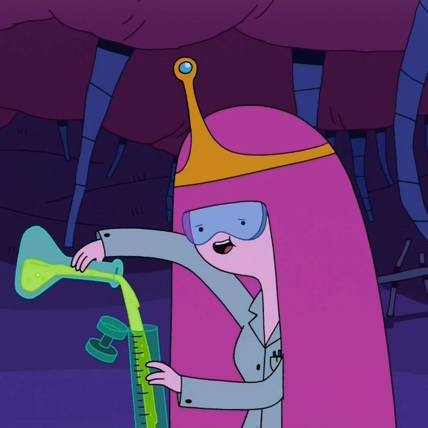

Projects

This is the projects page, where I showcase the work I’ve built and developed over time. These projects reflect my interests in digital arts, design, and game development, and highlight the skills I’ve been learning throughout my studies. Each project represents a different challenge, whether it’s creative, technical, or both, and shows my growth as I continue exploring what I can create.